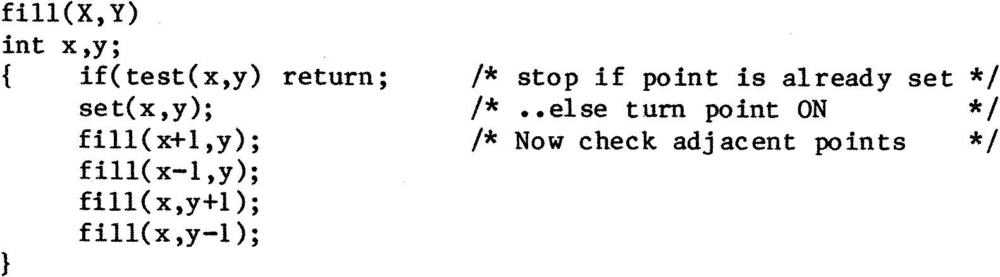

80-Bus News |
May–June 1984 · Volume 3 · Issue 3 |
| Page 21 of 51 |
|---|
ii) Any over-sized plots that go off the screen re-appear in the correct place when they return within the bounds of the display. There are no sudden ‘wrap-around’ problems that wreak havoc on some displays.
The graphics origin has been placed at the bottom left of the screen to line up with the pencil-and-paper convention. This also aligns with the approach taken by Hewlett-Packard in their extensive range of desk top computers, (98XX series, series 200, etc). These are widely used throughout Industry mainly in engineering applications.
There is also a ‘flood fill’ routine that, given starting coordinates X,Y, will fill the enclosed area that includes X,Y. This routine will fill polygons of any shape, and is fast in operation. The hardest part of developing the ‘fill’ algorithm was reducing the amount of workspace required by it. In escence a fill routine is very simple if recursion is allowed and a simple ‘C’ implementation is shown below.
This routine will do the job. The drawbacks of it as it stands are various. If it fills an empty 256 x 256 screen in the worst possible order the routine FILL will call itself 65,535 times, requiring a stack depth of about 128k together with another 256k required for the new values of X and Y that are generated on each CALL to FILL. The problem can be eased by making FILL fill in a line at a time instead of a point, but it still requires a fair amount of memory.
I ended up using an algorithm that utilised a FIFO (First in First Out) buffer rather than recursion. (You could regard recursion as a LIFO – Last In First Out – buffer.) This reduced the workspace requirements considerably. In fact I found that I could fill very complex shapes with only 128 bytes of workspace. However the FILL routine did drop out when I was filling a particularly complex shape with the software clock also present on the display. (It gave up as it was filling around the numbers of the clock display.) Up to then I had managed to keep my hands off the 1k of memory on the SVC that was reserved for downloading user programs into. As this memory sits there unused in 99% of cases I decided to grab it for the FILL routine, but to temper this impudence by implementing an ‘intelligent’ grab. What actually happens is this:
If no user program has been downloaded the FILL routine will use the full 1k as its workspace.
If a user program has been downloaded, then the FILL routine will use 3/4 of the remaining space as workspace. (i.e. If a program 227 bytes long is downloaded, the FILL routine will grab the last (1024-227)*3/4 bytes of the 1k RAM area for its buffer.)
This I believe is an acceptable approach as it is only likely to affect the 0.000001% of users who download 1k user programs while using the graphics fill command at the same time.
| Page 21 of 51 |
|---|